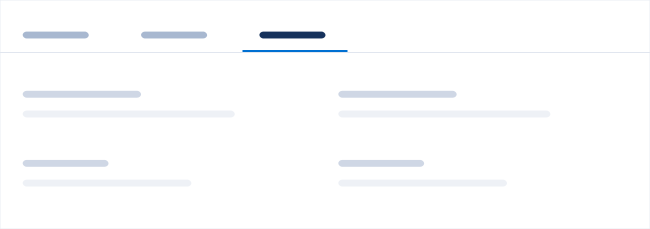

Navigation
Navigational patterns help users move between pages and situate themselves in the application.
Tabs
Use tabs to separate information into logical sections based on functionality or use case.

Users can easily switch between tabs to perform tasks without leaving the page. Assign a default tab based on the most important use case for the page. The sections that the tabs define function independently of each other, so do not use tabs to define a linear, ordered process.
Tab names must be consistent—use the same part of speech for each tab, such as a noun or verb.
If your tabs don’t fit in the horizontal space, place the tabs that don’t fit into an overflow menu that sits in the last tab position. Selecting a tab from the overflow menu should replace the last fully visible tab in the ribbon. The tab that was replaced should go into the tab overflow menu in the topmost position.
Global Tabs
A global tab changes all of the content below it. For example, the Activity, Collaboration, and Details tabs change all of the content within the left column on an Opportunity.
Scoped Tabs
A scoped tab affects only the content within the visual container that it sits on top of. For example, the publisher tabs change just the form for the activity timeline, but nothing changes in the feed below. This is useful when one wants to stack several tabbed sections.
Nesting Tabs
Although not ideal, you might occasionally need to nest tabs. You can nest scoped tabs within a global tab set, but do not nest global tabs. If additional hierarchy is necessary, consider using a tree component.
Trees
Organize pages in a tree to indicate hierarchy.
Use a tree if your app has layered navigation that can’t be represented in a simple tab set. A tree helps users navigate to pages and quickly find a nested child page without loading each page while navigating to the final destination page. Be sure to carefully study the mental models of users when deciding how to group pages in your tree.
You can use a tree in conjunction with breadcrumbs to further help users navigate the hierarchy.
Trees can technically have unlimited nesting, but we recommend avoiding excessive nesting. Flatter trees are generally easier to navigate.
Every item in the list doesn’t have to have a corresponding page. Instead, you can use label groups to organize related pages without providing an unnecessary landing page.
Breadcrumbs
Breadcrumbs help users navigate back up a hierarchy of pages.
A breadcrumb indicates the hierarchy path (parent-child relationships) of the page a user is on, rather than the order of the user’s browsing history. Breadcrumbs are especially useful when a user links directly to a page that is nested in a hierarchy but needs to go to a parent page. They also helps users situate themselves in the application.
Breadcrumbs are commonly used in conjunction with a tree for navigating between nested pages. The full hierarchy path is listed on a second or third level page. When the user is on a page deeper than three levels, the breadcrumb displays only the last two links. The rest of the hierarchy path is truncated, as shown in the following figure.
Modals
Use a modal when you want users to focus on a specific task within the context of the original page.
Use modals for pages that require the full attention of the user. Modals prevent the user from interacting with other elements on the page. A typical use of a modal is to display a form for entering or editing data. You can also use a directional modal for wizards and other forms that require linear navigation.
Modals are broken into three sections: the header, body, and footer.
Header — Includes the title and an optional tagline. The title reflects the button text that triggered it. The tagline can contain links, or the entire tagline can be a link.
Body — You can have any type of content: forms, text, videos, and other media. For a directional modal, you can add a step indicator to indicate the user’s progress.
Footer — Contains the navigational and action buttons. Action buttons, such as Save, Close, Delete, are on the right. Place the primary button—the one that guides the user toward the default action on the far right. For a directional modal, like a wizard, place the Next and Back navigation buttons on the opposite sides (left for Back and right for Next).
Sizing
Modals take up 50% of the user’s viewport. If the content requires a lot of horizontal space, you can use the large modal, which takes up 90% of the viewport. A minimum and maximum width are specified to avoid going too narrow or too wide.
The height of a modal is determined primarily by the length of its contents. The maximum height of the modal container is determined by its exterior margin. If the content is longer than the length of the modal, allow the user to scroll within the modal. The header and footer are fixed.